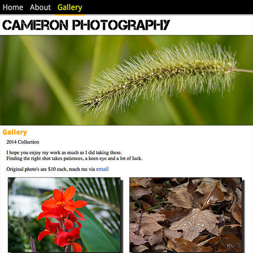
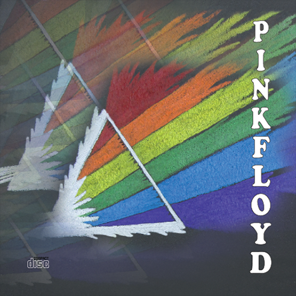
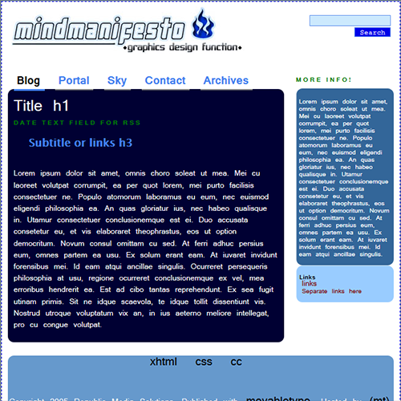

About
I attend the IMD - Interactive Media Design program full time. I specialize in front end mobile web development with a focus on responsive and engaging user experience design.
I was planning my Design Studies portfolio for the graphic design course application when I came across IMD program at Algonquin College. I was thrilled!
I started in September 2014 and it was the best move I could have made.
Services
HTML / CSS
JavaScript / jQuery
PHP / MySQL
Wordpress / CMS
Motion Graphics / ActionScript
Graphic design / Print media
Photography / Video
Recent Projects
Web Design I - Final
December, 2014
I created a travel site for my web design final with a slide menu and transitions all done in CSS3 and HTML5 with original graphics. The use of responsive design is the biggest factor in having an effective website.

Web Design I - Midterm
October, 2014
My first major website of the year was for a made up client looking for a photography site. Done in HTML5 and CSS3 this site highlights the use of web fonts and responsive design.
Pink Floyd CD Redesign
April, 2014
This was a CD redesign project I did in the Design Studies program. The logo was done with pencil crayon, pastels, and the pen tool in Adobe Illustrator. This project included printing and mounting the CD label, a front, back, spine, inside tray and door graphics.


Personal Blog
2013
I created this blog with Movable Type blog software. By editing PHP templates and filling it with my own images and content, I was able to manipulate the layout much the same as Wordpress using XHTML and CSS.
Contact
Have any questions or looking for something in perticular? Feel free to drop me a line.